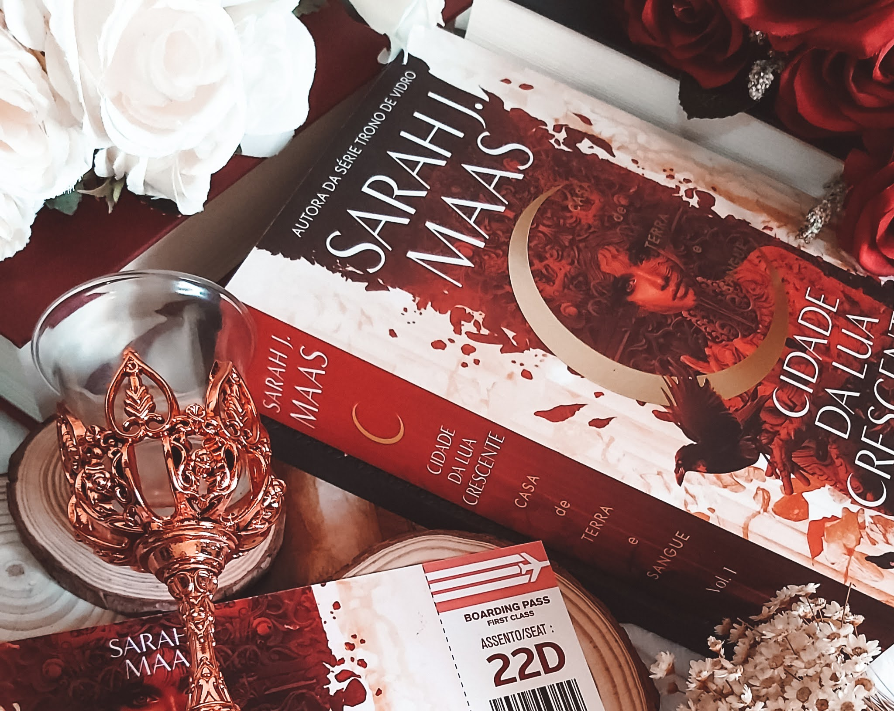

Olá, Querido leitor! Meu nome é Andressa Laurentino de Lima, sou uma mera mortal situada em uma pequena cidade do estado de Rondônia. Gosto muito de tirar fotos, que variam de coisas diversas, embora eu ame principalmente tirar fotos de coisas que não recebem uma devida atenção. Além disso, passo grande parte do meu tempo lendo, atualmente estou relendo a minha saga favorita, Os Garotos Corvos (super recomendo). Atualmente sou mãe de passáros: Sunflower, Pituco, Aelin e Rowan.
Livros Favoritos
#1 Os Garotos Corvos
Todo ano, na véspera do Dia de São Marcos, Blue Sargent vai com sua mãe clarividente até uma igreja abandonada para ver os espíritos que vão morrer em breve. Azul nunca consegue vê-los? até este ano, quando um garoto emerge da escuridão e fala diretamente com ela. Seu nome é Gansey, e ela logo descobre que ele é um estudante rico da Academia Aglionby, uma escola particular da cidade. Mas Blue se impôs uma regra: ficar longe dos garotos da Aglionby. Conhecidos como garotos corvos, eles só podem significar encrenca. Gansey tem tudo: Dinheiro, boa aparência, amigos leais, mas deseja muito mais. Ele está em uma missão com outros três garotos corvos: Adam, o aluno pobre que se ressente de toda a riqueza ao seu redor; Ronan, uma alma perturbada que varia da raiva ao desespero; e Noah, o observador taciturno, que percebe muitas coisas, mas fala pouco.

#2 O Castelo Animado

Surpresas podem se esconder sob uma cara de mau, um rosto enrugado ou um castelo encantado... Certo dia, enquanto trabalhava entediada na chapelaria da família, a jovem Sophie é surpreendida pela perversa Bruxa das Terras Desoladas. Por motivos que ela desconhece, a Bruxa a transforma numa velha de 90 anos, e Sophie não vê outra saída senão fugir para evitar a dor de não ser reconhecida por suas irmãs. Vagando sem rumo, a “jovem senhora” acaba na porta dos fundos do castelo do terrível Mago Howl, conhecido por devorar o coração das moças do povoado. Assim começa a mágica aventura de O castelo animado. Sophie, Howl, Calcifer e todos os personagens desta história estão prontos para mostrar que é possível encontrar humanidade e compaixão dentro de cada um.
#3 Cidade da Lua Crescente
Situado em um mundo onde os seres humanos lutam para sobreviver em meio a hierarquias intricadas de demônios, metamorfos, anjos e inúmeras outras criaturas mágicas, Cidade Crescente conta a história da meio-humana, meia-feérica: Bryce Quinlan. Após o brutal assassinato de sua melhor amiga, Bryce se junta a um poderoso guerreiro-anjo para caçar o assassino, levando-os a um inimigo traiçoeiro que poderia destruir o tecido de seu mundo.
